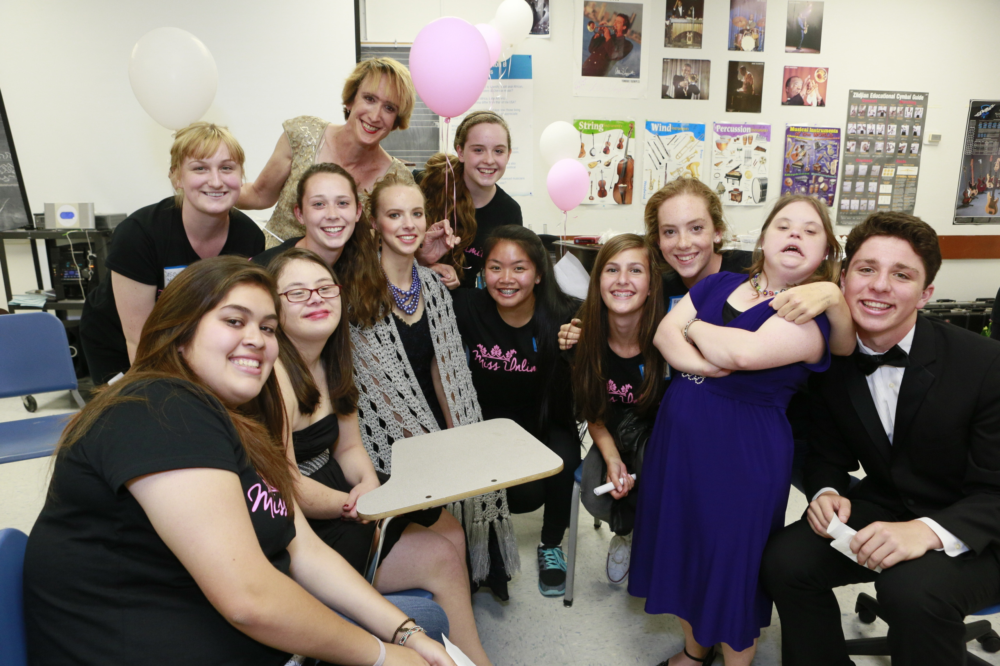
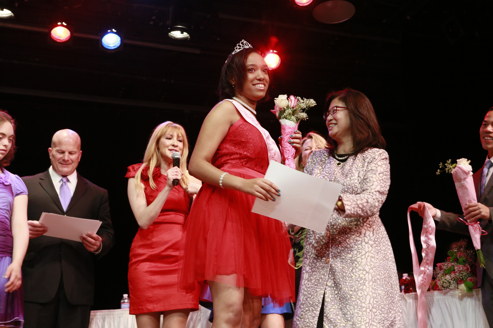

OPPORTUNITY
All too often, we are taught to believe in a false definition of what it means to be beautiful,
casting aside the essential values of real beauty: strength, kindness, confidence, the qualities that truly make us all radiant!
Last summer, I was deeply inspired by the HBO documentary, “Miss You Can Do it”.
The film tells the incredible story of Abbey Curran, winner of the 2008 Miss Iowa pageant,
who went on to be the first person with a disability to compete in the Miss USA pageant.
Shortly after, she founded a pageant specifically for girls with special needs, “Miss You Can Do It.”
The pageant provides the opportunity for these young girls to be celebrated for all they are inside,
and not just defined by what the world sees on the outside.


OUR STORY
The idea that “everyone has gifts” and “everyone has something to offer” struck me profoundly
in this film and I knew it was a message that needed to be shared. I decided to show the documentary to my students.
What started as an idea, quickly evolved into conversations with them about true beauty, creativity and inspiration.
Those conversations turned into weekly lunches with a group of young people sharing ideas and coming together as a unified group that had a mission;
to bring the value of that message to the Bay Area and create our own pageant to celebrate the beauty and spirit of girls with special needs.
It was then, that Miss Unlimited was born.
UNLIMITED
Beyond the walls of the school, other women and men reached out to get involved.
United by the message that we are all beautiful and have unlimited potential to reach our goals and follow our dreams, a movement was created.
I was most fortunate to meet a new friend, Brandi DeCarli,
who quickly became my co-director, as she embodied the mission of what we were doing so elegantly.
When we talked about what we wanted to accomplish, she said it best:
“True beauty lies in what we are able to achieve and offer to the world, and how we make other people feel.
Everyone has challenges, but recognizing our own beauty and potential is the ultimate gift.”
Ms. Michelle Wynn, Executive Director